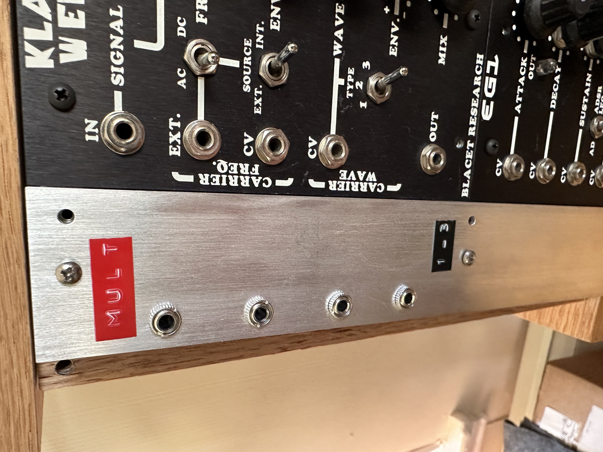
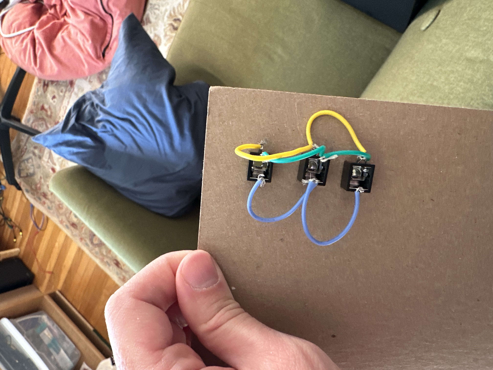

back
back
Building a mult module for a modular synthesizer
Introduction
In a modular synthesizer, a multiplier module lets one signal control multiple parameters simultaneously. For example, a sine wave could control the both the cutoff of a filter and the pitch of a VCO. A clock signal could control the tempo of two sequencers.
With the help of a friendly and talented office floormate, and an instructive and cool YouTube video, I built a DIY one for my modular synthesizer.
|  |
You can plug a signal into any one of the jacks, and then the three remaining jacks become outputs that you can use to control other signals in the synthesizer.
Design and prototype
This design has a short parts list:
- 3 audio jacks
- Wires
- Front panel
- Dymo label maker
The audio jacks each have three terminals: a ground terminal, and a left and right audio terminal. I wired together the ground terminals of each jack, and then the left and right terminals, first prototyping on a piece of cardboard:
|  |  |
Final build
Then, my wonderful office floormate gave me a piece of aluminum to use as a front panel to replace the cardboard. It fit perfectly on the left side of my modular synth. We measured four equidistant drilling points on the panel, and used a drill press to drill 1/8th inch holes for the jacks. We also brushed the steel with a brush attachment on the press, which gave the panel a smooth look.
 |  |
 |  |
 fix a typo
fix a typo